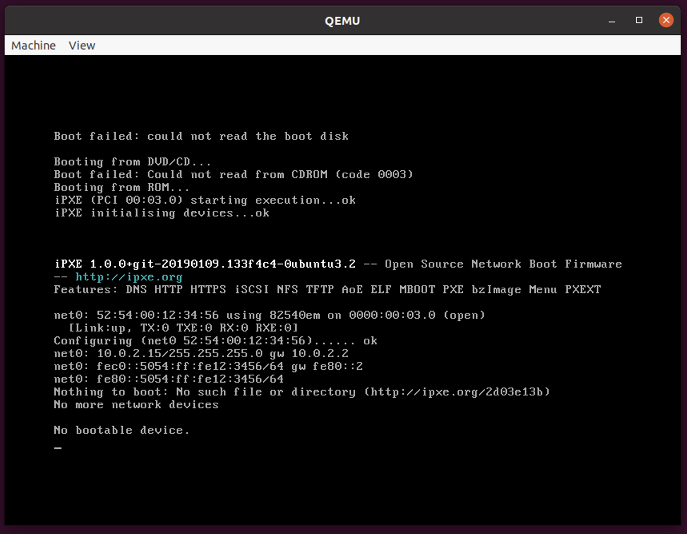

Task 1: Setting up guest1
1. Enter the following command into the terminal:
sudo apt update -y
sudo apt install -y vim qemu-kvm nfs-kernel-server net-tools
2. Before launching QEMU on the first guest VM, obtain the IP address of this VM.
ip a
For example:

3. Create a QEMU image file:
qemu-img create -f qcow2 ubuntu.qcow2 10G
4. Create a new directory in /mnt and modify its ownership and permissions:
sudo mkdir -p /mnt/nfs
sudo chown nobody:nogrouup /mnt/nfs
sudo chmod 777 /mnt/nfs
5. Move the QEMU image file you just created into the new directory:
mv ubuntu.qcow2 /mnt/nfs
6. Edit the file at /etc/exports with superuser privileges:
sudo vim /etc/exports
7. Add the following line to the end of the exports file and save it:
/mnt/nfs *(rw,sync,no_subtree_check,no_root_squash)
8. Return to the terminal and enter this command to update the exports file:
sudo exportfs -arv
9. Launch QEMU to simulate a running process on the virtual machine:
sudo qemu-system-x86_64 \
-cpu host -enable-kvm -m 2G -smp 1 \
-drive if=virtio,format=qcow2,file=/mnt/nfs/ubuntu.qcow2 \
-monitor telnet:127.0.0.1:5500,server,nowait
A window similar to this will then appear: 